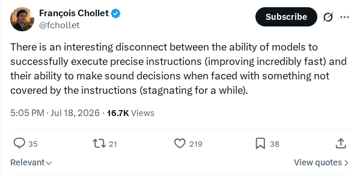

Fable 5 与 GPT-5.6 Sol 在 NP-hard 问题上的表现：/goal 指令有帮助吗？
研究人员评估了 Fable 5 和 GPT-5.6 Sol 大语言模型在 NP-hard 组合优化问题上的表现，以测试目标导向提示（goal-directed prompting）的影响。通过在系统提示词中附加“/goal”指令，该研究测量了多轮迭代中的正确性、Token 使用量和计算效率。结果表明，明确的目标导向框架能显著缓解规划漂移，并提高这些前沿推理模型的逻辑一致性。
AI 前沿资讯、研究与趋势精选
研究人员评估了 Fable 5 和 GPT-5.6 Sol 大语言模型在 NP-hard 组合优化问题上的表现，以测试目标导向提示（goal-directed prompting）的影响。通过在系统提示词中附加“/goal”指令，该研究测量了多轮迭代中的正确性、Token 使用量和计算效率。结果表明，明确的目标导向框架能显著缓解规划漂移，并提高这些前沿推理模型的逻辑一致性。
继 OpenAI 发布 CDC 数学证明公告后，有报道指出 GPT-5.6 模型解决了凸优化领域一个长达三十年的理论空白。通过使用高度专业化且结构化的提示词，该大语言模型识别出了人类研究人员几十年来一直未能发现的新型数学公式。这一里程碑凸显了先进生成式 AI 在协助复杂科学发现及加速严谨数学证明方面的能力。
这份技术分析概述了 Kimi K3 对话式 AI 模型的发布及其影响。作者详细介绍了该模型如何在深度推理、上下文窗口容量和计算架构效率方面带来范式转变。这些进展挑战了关于提示长度限制和计算瓶颈的传统假设，为企业级自主智能体和复杂文档分析开启了新的应用场景。
本技术指南提供了配置辅助 macOS 设备以供 Anthropic 的命令行开发者智能体 Claude Code 进行远程管理的说明。作者详细介绍了授权执行所需的安全性措施、SSH 配置、系统权限和 shell 环境设置。将基于终端的 AI 助手隔离在备用机器上，可以让开发人员在物理沙箱环境中安全地测试和调试代码。
一份利用 Stack Exchange 数据进行的视觉分析显示，Stack Overflow 的开发者参与度和流量出现显著下滑。数据凸显了工作流的重大转变，开发者正日益将代码生成和调试查询的需求从传统的社区驱动问答论坛转向对话式大语言模型和生成式 AI 助手。
Anthropic 宣布其 AI 驱动的开发者助手工具 Claude Code 的使用限额将临时增加 50%。此容量提升即刻适用于所有付费用户层级，包括 Pro、Max、Team 以及基于席位的企业订阅用户，并将持续至 8 月 19 日。此次调整旨在支持开发者在执行复杂编码工作流和密集项目实验时，不受标准 Token 限制的影响。

AI 研究员 Francois Chollet 强调了生成式模型能力的日益分化，指出尽管系统在遵循精确指令方面表现出指数级的改进，但其在陌生环境下的自主决策能力却陷入了停滞。目前的架构擅长基于规则的过程执行，但在遇到模糊、分布外（out-of-distribution）的场景时无法进行泛化，这引发了人们对实现通用认知多功能性路径的质疑。
Gary Marcus 和 Miles Brundage 评估了他们于 2024 年底发起的多年度 AGI 赌约的阶段性进展。该赌约依赖于真正通用人工智能（AGI）必须实现的十项具体能力，最终评估截止日期定于 2027 年底。此次回顾评估了当前的 AI 模型是否符合既定基准。Marcus 还与 Demis Hassabis 一道表达了怀疑态度，认为目前的架构距离真正的 AGI 依然非常遥远。
Kling AI 发布了一份提示词工程教程，展示了如何使用其生成式视频平台合成高保真、超现实的环境过渡效果。该指南详细说明了生成通往精细云端景观的梦幻视觉门户所需的工作流参数和提示策略。此次发布展示了该模型在时间一致性、空间连贯性和电影级视频合成方面的能力，旨在服务创意专业人士。
Kling AI 与 Magnific 合作推出了一款专为体育主题媒体创作定制的交互式内容生成工作流。该集成将 Kling 的生成式视频技术与 Magnific 的高分辨率增强能力相结合，使数字创作者、营销人员和爱好者能够生成并编辑高保真、定制化的体育图像及动态视频序列。